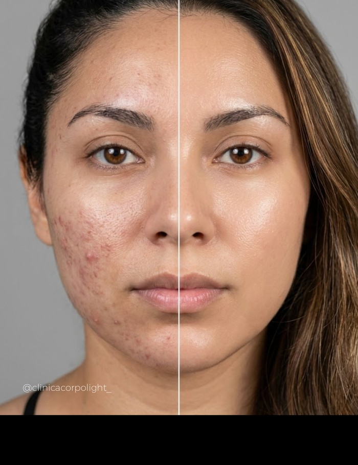
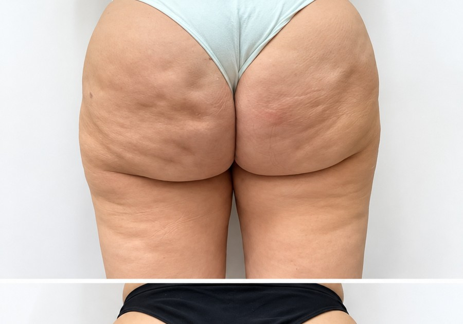
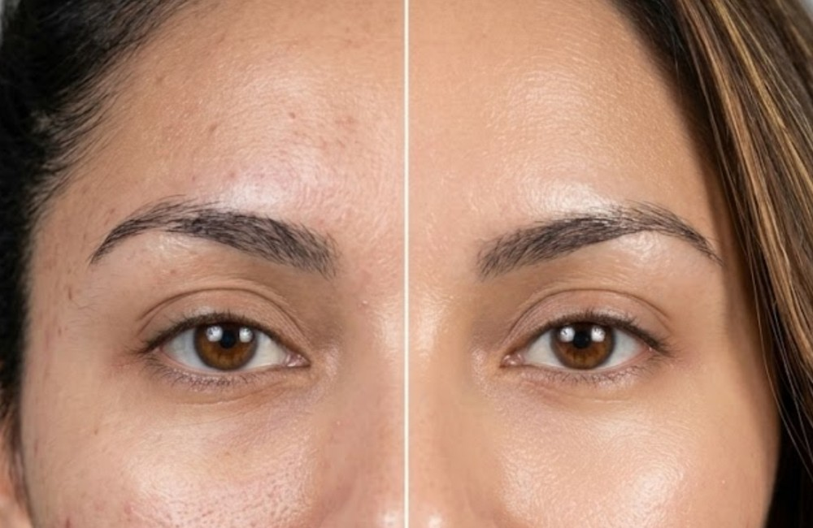
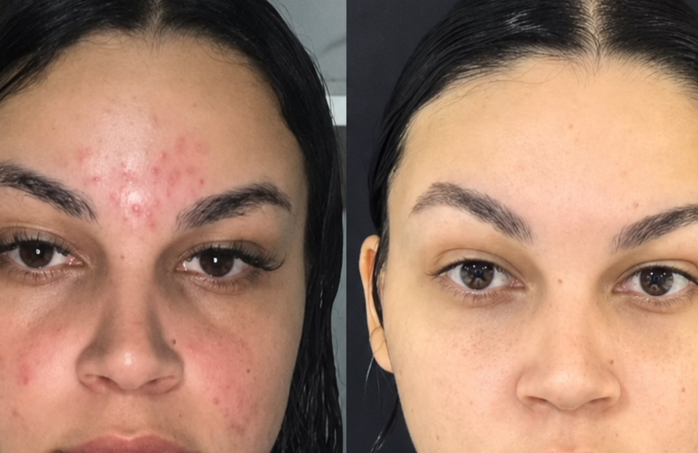

Aumento e Remodelação de Glúteo (Bioestimulador)
Aplicação estratégica de bioestimuladores de colágeno para ganho de sustentação, projeção, firmeza e melhora imediata da celulite e textura dérmica.
Clínica Dra. Meire Vieira · Mogi das Cruzes - SP
Especialista em Fisioterapia Dermatofuncional, unindo ciência, estética avançada e protocolos exclusivos para cuidar de você com carinho, ética e segurança. Mais de 18 anos transformando vidas e elevando a autoestima em Mogi das Cruzes.
Ver Casos
Conheça mais sobre a Dra. Meire Vieira · Responsável Técnica
A Clínica Dra. Meire Vieira foi idealizada para proporcionar um atendimento único, acolhedor e altamente qualificado. Com mais de 18 anos de dedicação à Fisioterapia Dermatofuncional, minha missão é unir tecnologia de ponta e técnicas consagradas de emagrecimento, remodelação corporal e rejuvenescimento facial.
Aqui, cada detalhe é planejado para que você se sinta especial e alcance os resultados dos seus sonhos com total naturalidade, respeito à sua identidade e transparência em todas as etapas.
Agende sua avaliação exclusiva comigo
Tratamentos Especializados em Mogi das Cruzes
Tratamentos dermatofuncionais de alta performance desenvolvidos sob medida para atender suas necessidades com precisão, segurança e resultados duradouros.
Aplicação estratégica de bioestimuladores de colágeno para ganho de sustentação, projeção, firmeza e melhora imediata da celulite e textura dérmica.
Prevenção e suavização de rugas dinâmicas na testa, glabela e pés de galinha, promovendo um semblante leve, descansado e naturalmente rejuvenescido.
Protocolos seguros e combinados para clareamento profundo, uniformização do tom e controle biológico da hiperpigmentação facial sem efeito rebote.
Aceleração do metabolismo celular com complexo de aminoácidos estéreis para redução de gordura localizada, suporte ao emagrecimento e tônus muscular.
Nutrição intensiva com ácido hialurônico fluido nas camadas profundas da derme, devolvendo viço, maciez, elasticidade e luminosidade à pele ressecada.
Tecnologia avançada para eliminação definitiva dos pelos com ponteira resfriada, proporcionando conforto térmico, rapidez e segurança para todos os tons de pele.
Abordagem clínica para fortalecimento do folículo piloso, controle da queda capilar e estímulo ao crescimento de novos fios saudáveis e densos.
Atenuação elegante da linha nasolabial com volumização proporcional em ácido hialurônico de alta biocompatibilidade, devolvendo sustentação ao terço médio.
Protocolos e Resultados na Clínica Dra. Meire Vieira
Cada paciente possui características biológicas únicas. Por isso, os tratamentos corporais e faciais são planejados de forma totalmente personalizada, garantindo eficácia clínica, segurança e longevidade.




Comparativo Interativo · Antes & Depois
Arraste o comparador ao lado para observar a uniformização de textura, redução de manchas e recuperação do viço natural obtidos com os protocolos da Dra. Meire Vieira. Tratamentos conduzidos com rigor dermatofuncional e respeito à fisiologia de cada paciente.
Agende sua avaliação pelo WhatsAppAvaliações dos Pacientes · Nota 4.7 no Google
“Ambiente acolhedor, atendimento com carinho
e resultados que surpreendem.”
“Tem no espaço várias opções de estética! O atendimento é maravilhoso, ambiente super limpo e a Dra. Meire é extremamente atenciosa e competente. Super recomendo!”
“Ambiente tranquilo e atendimento super bacana! Me senti super cuidada do início ao fim. Profissionais qualificados e resultados excelentes.”
“Para quem gosta de cuidar do corpo, vale a pena fazer uma visita. Espaço aconchegante, aparelhos modernos e muita seriedade no trabalho.”
“Fiz o protocolo para melasma e estou encantada com a diferença na minha pele. Estava há anos tentando clarear sem sucesso e a Dra. Meire conseguiu devolver minha autoestima!”
“Os bioestimuladores de glúteo e o Botox ficaram impecáveis e super naturais! A Dra. Meire explica tudo com paciência e tem as mãos super leves.”
“A melhor clínica de estética de Mogi das Cruzes! Sou cliente há anos e não troco por nada. O protocolo de emagrecimento com aminoácidos deu um resultado sensacional.”
Perguntas Frequentes · Tire suas dúvidas
Na primeira consulta, a Dra. Meire Vieira realiza uma análise clínica detalhada do seu histórico, queixas estéticas, qualidade da pele e biotipo corporal. A partir dessa avaliação minuciosa, desenhamos um protocolo 100% individualizado para alcançar seus objetivos com segurança e previsibilidade.
Não! Utilizamos anestésicos tópicos de alta potência e agulhas ultra-finas de tecnologia japonesa, além de técnicas de distração e gelo local. A grande maioria dos nossos pacientes relata apenas um leve desconforto perfeitamente tolerável durante a aplicação.
O bioestimulador de colágeno (como ácido polilático ou hidroxiapatita) é injetado nas camadas específicas do glúteo para estimular a produção natural de fibras de colágeno pelo próprio organismo. O resultado é um efeito lifting progressivo, com melhora da sustentação, projeção anatômica e suavização de celulites.
O melasma é uma condição crônica da pele que exige controle contínuo. Nosso protocolo combina ativos clareadores avançados, despigmentantes e proteção biológica que inibem a atividade dos melanócitos, clareando manchas existentes e prevenindo o efeito rebote com acompanhamento e orientações de home care.
São formulações estéreis de aminoácidos essenciais aplicadas via intramuscular ou subcutânea para otimizar o metabolismo energético, potencializar a queima de gordura e auxiliar na preservação e definição da massa magra durante o processo de emagrecimento saudável.
Estamos localizados na Av. Francisco Rodrigues Filho, 1551 - Loja 11, Nova Mogilar, Mogi das Cruzes - SP (CEP 08773-380). O local possui fácil acesso, ambiente climatizado, privativo e com vagas de estacionamento na porta para seu total conforto.
Clínica Dra. Meire Vieira · Nova Mogilar, Mogi das Cruzes
Dê o primeiro passo para conquistar o corpo e o rosto que você sempre sonhou, com acompanhamento de quem tem mais de 18 anos de compromisso com a sua beleza e saúde.
Agendar avaliação no WhatsAppEndereço da Clínica (Estacionamento no Local)
Av. Francisco Rodrigues Filho, 1551 - Loja 11 · Nova Mogilar, Mogi das Cruzes - SP, 08773-380Horários de Atendimento
Segunda a Sexta: 08:00h às 19:00h · Sábados com agendamento prévioTelefone Direto & WhatsApp
+55 (11) 93931-2504Especialidade
Fisioterapia Dermatofuncional • Emagrecimento e Rejuvenescimento